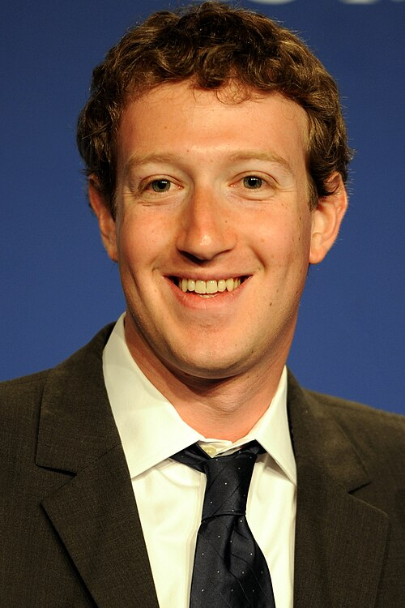
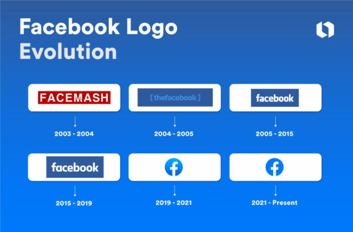

Historie sociální sítě
Facebook (dnes Meta)
Od kolejního projektu k digitálnímu impériu

- Rok založení
- 2004
- Zakladatelé
- Mark Zuckerberg, Eduardo Saverin, Andrew McCollum, Dustin Moskovitz a Chris Hughes
Vývoj loga Facebooku

Od Harvardu do celého světa
Facebook, původně spuštěný pod názvem TheFacebook v únoru 2004, vznikl na Harvardově univerzitě. Sloužil jako digitální katalog studentů s fotografiemi a kontakty, který jim pomáhal poznat spolužáky. Díky rychlému úspěchu se brzy rozšířil na další univerzity a v roce 2006 se otevřel veřejnosti starší 13 let.
Jak se z katalogu stala platforma
První verze stavěla na osobních profilech, seznamu přátel a možnosti prohlížet si informace o lidech ze stejné školy. Po rozšíření mimo Harvard přibývaly univerzity, střední školy a nakonec i lidé bez školní e-mailové adresy. Otevření registrace v roce 2006 změnilo Facebook z uzavřeného studentského prostoru na službu pro širokou veřejnost.
Další vývoj se soustředil na průběžný přehled příspěvků, fotografie, stránky organizací a nástroje pro komunikaci. News Feed soustředil aktivitu přátel na jednu obrazovku a vyvolal debatu o tom, jak platforma vybírá a řadí informace. S rostoucím používáním chytrých telefonů se Facebook přesunul na mobilní zařízení a stal se součástí každodenního sdílení zpráv, fotografií i událostí.
Facebook v ekosystému Meta
Facebook postupně přidal skupiny, události, živá videa, Marketplace a nástroje pro firmy i tvůrce. Reklama založená na cílení se stala klíčovou součástí jeho obchodního modelu. Akvizice Instagramu a WhatsAppu rozšířila portfolio služeb mateřské společnosti; v roce 2021 se tato společnost přejmenovala na Meta Platforms, zatímco samotná sociální síť si ponechala jméno Facebook.
Platforma dnes čelí otázkám ochrany osobních údajů, moderování obsahu, šíření dezinformací a vlivu doporučovacích algoritmů. Její historie proto není jen příběhem nových funkcí, ale i hledání rovnováhy mezi propojením lidí, bezpečností a odpovědností za veřejný prostor.
Klíčové milníky
-
2006 · News Feed
Novinky začaly zobrazovat aktivitu přátel na jednom místě a změnily způsob, jakým lidé sledují obsah na internetu.
-
2009 · Tlačítko „To se mi líbí“
Jednoduchá reakce usnadnila interakci s příspěvky a pomohla platformě lépe poznat, jaký obsah uživatele zajímá.
-
2012 a 2014 · Instagram a WhatsApp
Facebook koupil Instagram v roce 2012 a WhatsApp v roce 2014, čímž výrazně rozšířil své působení v online komunikaci.
-
2021 · Vznik společnosti Meta
Mateřská společnost Facebooku přijala název Meta Platforms a oznámila větší zaměření na virtuální realitu a metaverzum.
Vliv na společnost
Facebook proměnil způsob, jakým lidé udržují kontakty a sdílejí informace. Pomohl vytvořit rozsáhlý trh s cílenou online reklamou a pro mnoho lidí se stal důležitým zdrojem zpráv i každodenní komunikace.